산업안전산업기사 (2017-05-07 기출문제)
1과목: 산업안전관리론
1. 기업 내 정형교육 중 TWI의 훈련내용이 아닌 것은?
- 작업방법훈련
- 작업지도훈련
- 사례연구훈련
- 인간관계훈련
(정답률: 79%)

2. 강의계획에 있어 학습목적의 3요소가 아닌 것은?
- 목표
- 주제
- 학습 내용
- 학습 정도
(정답률: 55%)
3. 비통제의 집단행동 중 폭동과 같은 것을 말하며, 군중보다 합의성이 없고, 감정에 의해서만 행동하는 특성은?
- 패닉(Panic)
- 모브(Mob)
- 모방(Imitation)
- 심리적 전염(Mental Epidemic)
(정답률: 71%)
4. 부주의의 발생원인과 그 대책이 옳게 연결된 것은?
- 의식의 우회 - 상담
- 소질적 조건 - 교육
- 작업환경 조건 불량 – 작업순서 정비
- 작업순서의 부적당 – 작업자 재배치
(정답률: 85%)
5. 산업안전보건법령상 안전검사 대상 유해·위험 기계등이 아닌 것은?(관련 규정 개정전 문제로 여기서는 기존 정답인 2번을 누르면 정답 처리됩니다. 자세한 내용은 해설을 참고하세요.)
- 곤돌라
- 이동식 국소 배기장치
- 산업용 원심기
- 건조설비 및 그 부속설비
(정답률: 86%)
6. 재해발생의 주요원인 중 불안전한 상태에 해당하지 않는 것은?
- 기계설비 및 장비의 결함
- 부적절한 조명 및 환기
- 작업장소의 정리·정돈 불량
- 보호구 미착용
(정답률: 71%)
7. 산업안전보건법령상 근로자 안전·보건 교육의 기준으로 틀린 것은?
- 사무직 종사 근로자의 정기교육： 매분기 3시간 이상
- 일용근로자의 작업내용 변경시의 교육: 1시간 이상
- 관리감독자의 지위에 있는 사람의 정기교육: 연간 16시간 이상
- 건설 일용 근로자의 건설업 기초안전·보건교육: 2시간 이상
(정답률: 73%)
8. 토의법의 유형 중 다음에서 설명하는 것은?
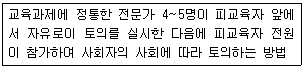
- 포럼(forum)
- 패널 디스커션(panel discussion)
- 심포지엄(symposium)
- 버즈 세션(buzz session)
(정답률: 64%)
9. 학습정도(level of learning)의 4단계 요소가 아닌 것은?
- 지각
- 적용
- 인지
- 정리
(정답률: 70%)
10. 안전관리조직의 형태 중 라인·스탭형에 대한 설명으로 틀린 것은?
- 안전스탭은 안전에 관한 기획·입안·조사·검토 및 연구를 행한다.
- 안전업무를 전문적으로 담당하는 스탭 및 생산라인의 각 계층에도 겸임 또는 전임의 안전담당자를 둔다.
- 모든 안전관리업무를 생산라인을 통하여 직선적으로 이루어지도록 편성된 조직이다.
- 대규모 사업장(1000명 이상)에 효율적이다.
(정답률: 83%)
11. 맥그리거(McGregor)의 X이론에 따른 관리처방이 아닌 것은?
- 목표에 의한 관리
- 권위주의적 리더십 확립
- 경제적 보상체제의 강화
- 면밀한 감독과 엄격한 통제
(정답률: 59%)
12. 어느 공장의 재해율을 조사한 결과 도수율이 20이고, 강도율이 1.2로 나타났다. 이 공장에서 근무하는 근로자가 입사부터 정년퇴직할 때까지 예상되는 재해건수(a)와 이로 인한 근로손실 일수(b)는?
- a = 20, b = 1.2
- a = 2, b = 120
- a = 20, b = 20
- a = 120, b = 2
(정답률: 67%)
13. 재해손실비의 평가방식 중 시몬즈(R.H. Simonds)방식에 의한 계산방법으로 옳은 것은?
- 직접비 + 간접비
- 공동비용 + 개별비용
- 보험코스트 + 비보험코스트
- (휴업상해건수 관련비용 평균치) + (통원상해건수 × 관련비용 평균치)
(정답률: 72%)
14. 무재해운동 추진기법 중 지적확인에 대한 설명으로 옳은 것은?
- 비평을 금지하고, 자유로운 토론을 통하여 독창적인 아이디어를 끌어낼 수 있다.
- 참여자 전원의 스킨십을 통하여 연대감. 일체감을 조성할 수 있고 느낌을 교류한다.
- 작업 전 5분간의 미팅을 통하여 시나리오상의 역할을 연기하여 체험하는 것을 목적으로 한다.
- 오관의 감각기관을 총동원하여 작업의 정확성과 안전을 확인한다.
(정답률: 75%)
15. 재해예방의 4원칙에 해당하지 않는 것은?
- 예방가능의 원칙
- 대책선정의 원칙
- 손실우연의 원칙
- 원인추정의 원칙
(정답률: 76%)
16. 인간의 착각현상 중 버스나 전동차의 움직임으로 인하여 자신이 승차하고 있는 정지된 차량이 움직이는 것 같은 느낌을 받는 현상은?
- 자동운동
- 유도운동
- 가현운동
- 플리커현상
(정답률: 68%)
17. 안전·보건표지의 기본모형 중 다음 그림의 기본모형의 표시사항으로 옳은 것은?
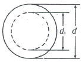
- 지시
- 안내
- 경고
- 금지
(정답률: 67%)
18. 지도자가 추구하는 계획과 목표를 부하직원이 자신의 것으로 받아들여 자발적으로 참여하게 하는 리더십의 권한은?
- 보상적 권한
- 강압적 권한
- 위임된 권한
- 합법적 권한
(정답률: 70%)
19. 하인리히의 사고방지 5단계 중 제1단계 안전조직의 내용이 아닌 것은?
- 경영자의 안전목표 설정
- 안전관리자의 선임
- 안전활동의 방침 및 계획수립
- 안전회의 및 토의
(정답률: 57%)
20. 보호구 자율안전확인 고시상 사용구분에 따른 보안경의 종류가 아닌 것은?
- 차광보안경
- 유리보안경
- 플라스틱보안경
- 도수렌즈보안경
(정답률: 65%)
2과목: 인간공학 및 시스템안전공학
21. 휘도(luminance)가 10cd/m2이고, 조도(illuminance)가 100 lx 일 때 반사율(reflectance)(%)는?
- 0.1π
- 10π
- 100π
- 1000π
(정답률: 45%)
22. 사람의 감각기관 중 반응속도가 가장 느린 것은?
- 청각
- 시각
- 미각
- 촉각
(정답률: 73%)
23. 한 사무실에서 타자기의 소리 때문에 말소리가 묻히는 현상을 무엇이라 하는가?
- dBA
- CAS
- phone
- masking
(정답률: 78%)
24. 1에서 15까지 수의 집합에서 무작위로 선택할 때, 어떤 숫자가 나올지 알려주는 경우의 정보량은 몇 bit인가?
- 2.91 bit
- 3.91 bit
- 4.51 bit
- 4.91bit
(정답률: 58%)
25. 어떤 전자기기의 수명은 지수분포를 따르며, 그 평균수명이 1000시간 이라고 할 때, 500시간 동안 고장 없이 작동할 확률은 약 얼마인가?
- 0.1353
- 0.3935
- 0.6065
- 0.8647
(정답률: 47%)
26. 체계 분석 및 설계에 있어서 인간공학의 가치와 가장 거리가 먼 것은?
- 성능의 향상
- 훈련비용의 증가
- 사용자의 수용도 향상
- 생산 및 보전의 경제성 증대
(정답률: 81%)
27. 작업기억과 관련된 설명으로 틀린 것은?
- 단기기억이라고도 한다.
- 오랜 기간 정보를 기억하는 것이다.
- 작업기억 내의 정보는 시간이 흐름에 따라 쇠퇴할 수 있다.
- 리허설(rehearsal)은 정보를 작업기억 내에 유지하는 유일한 방법이다.
(정답률: 79%)
28. 의자의 등받이 설계에 관한 설명으로 가장 적절하지 않은 것은?
- 등받이 폭은 최소 30.5cm가 되게 한다.
- 등받이 높이는 최소 50cm가 되게 한다.
- 의자의 좌판과 등받이 각도는 90 ~ 1⑤°를 유지한다.
- 요부받침의 높이는 25 ~ 35cm로 하고 폭은 30.5cm로 한다.
(정답률: 65%)
29. FT도에 의한 컷셋(cut set)이 다음과 같이 구해졌을 때 최소 컷셋(minimal cut set)으로 맞는 것은?
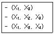
- (X1, X3)
- (X1, X2, X3)
- (X1, X3, X4)
- (X1, X2, X3, X4)
(정답률: 77%)
30. 단일 차원의 시각적 암호 중 구성암호, 영문자 암호, 숫자암호에 대하여 암호로서의 성능이 가장 좋은 것부터 배열한 것은?
- 숫자암호 – 영문자암호 - 구성암호
- 구성암호 - 숫자암호 – 영문자암호
- 영문자암호 - 숫자암호 - 구성암호
- 영문자암호 - 구성암호- 숫자암호
(정답률: 67%)
31. 정보 전달용 표시장치에서 청각적 표현이 좋은 경우가 아닌 것은?
- 메시지가 복잡하다.
- 시각장치가 지나치게 많다.
- 즉각적인 행동이 요구된다.
- 메시지가 그 때의 사건을 다룬다.
(정답률: 71%)
32. FTA의 용도와 거리가 먼 것은?
- 고장의 원인을 연역적으로 찾을 수 있다.
- 시스템의 전체적인 구조를 그림으로 나타낼 수 있다.
- 시스템에서 고장이 발생할 수 있는 부분을 쉽게 찾을 수 있다.
- 구체적은 초기사건에 대하여 상향식(bottom-up) 접근방식으로 재해경로를 분석하는 정량적 기법이다.
(정답률: 66%)
33. 안전가치분석의 특징으로 틀린 것은?
- 기능위주로 분석한다.
- 왜 비용이 드는가를 분석한다.
- 특정 위험의 분석을 위주로 한다.
- 그룹 활동은 전원의 중지를 모은다.
(정답률: 43%)
34. 일반적인 인간 – 기계 시스템의 형태 중 인간이 사용자나 동력원으로 기능하는 것은?
- 수동체계
- 기계화제계
- 자동체계
- 반자동체계
(정답률: 72%)
35. 산업안전보건법에 따라 상시 작업에 종사하는 장소에서 보통작업을 하고자 할 때 작업면의 최소 조도(lux)로 맞는 것은?
- 75
- 150
- 300
- 750
(정답률: 65%)
36. 보전효과 측정을 위해 사용하는 설비고장 강도율의 식으로 맞는 것은?
- 부하시간 설비가동시간
- 총 수리시간 ÷ 설비가동시간
- 설비고장건수 ÷ 설비가동시간
- 설비고장 정지시간 ÷ 설비가동시간
(정답률: 58%)
37. 정보처리기능 중 정보보관에 해당되는 것과 관계가 깊은 것은?(문제 오류로 가다반 발표시 3번으로 발표되었지만 확정답안 발표시 전항 정답 처리되었습니다. 여기서는 3번을 누르면 정답 처리 됩니다.)
- 감지
- 정보처리
- 출력
- 행동기능
(정답률: 83%)
38. 인체 측정치 중 기능적 인체치수에 해당되는 것은?
- 표준자세
- 특정작업에 국한
- 움직이지 않는 피측정자
- 각 지체는 독립적으로 움직임
(정답률: 51%)
39. FT 작성 시 논리게이트에 속하지 않는 것은 무엇인가?
- OR 게이트
- 억제 게이트
- AND 게이트
- 동등 게이트
(정답률: 81%)
40. 시스템 안전 분석기법 중 인적오류와 그로인한 위험성의 예측과 개선을 위한 기법은 무엇인가?
- FTA
- ETBA
- THERP
- MORT
(정답률: 78%)
3과목: 기계위험방지기술
41. 산업안전보건법령상 양중기에 사용하지 않아야 하는 달기체인의 기준으로 틀린 것은?
- 변형이 심한 것
- 균열이 있는 것
- 길이의 증가가 제조시보다 3%를 초과한 것
- 링의 단면지름의 감소가 제조시 링 지름의 10%를 초과한것
(정답률: 75%)
42. 아세틸렌 용접장치의 안전기준과 관련하여 다음 빈칸에 들어갈 용어로 옳은 것은?
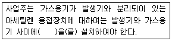
- 격납실
- 안전기
- 안전밸브
- 소화설비
(정답률: 60%)
43. 기계설비의 안전조건 중 외관의 안전화에 해당되지 않는 것은?
- 오동작 방지 회로 적용
- 안전색채 조절
- 덮개의 설치
- 구획된 장소에 격리
(정답률: 76%)
44. 산업용 로봇 작업 시 안전조치 방법이 아닌 것은?
- 높이 1.8m 이상의 방책을 설치한다.
- 로봇의 조작방법 및 순서의 지침에 따라 작업한다.
- 로봇 작업 중 이상상황의 대처를 위해 근로자 이외에도 로봇의 기동스위치를 조작할 수 있도록 한다.
- 2인 이상의 근로자에게 작업을 시킬 때는 신호 방법의 지침을 정하고 그 지침에 따라 작업한다.
(정답률: 82%)
45. 다음 중 연삭기의 종류가 아닌 것은?
- 다두 연삭기
- 원통 연삭기
- 센터리스 연삭기
- 만능 연삭기
(정답률: 61%)
46. 프레스의 제작 및 안전기준에 따라 프레스의 각 항목이 표시된 이름판을 부착해야 하는 데 이 이름판에 나타내어야 하는 항목이 아닌 것은?
- 압력능력 또는 전단능력
- 제조연원
- 안전인증의 표시
- 정격하중
(정답률: 53%)
47. 동력식 수동대패기계의 덮개와 송급 테이블면과의 간격기준은 몇 mm이하여야 하는가?
- 3
- 5
- 8
- 12
(정답률: 52%)
48. 기계나 그 부품에 고장이나 기능 불량이 생겨도 항상 안전하게 작동하는 안전화 대책은?
- fool proof
- fail safe
- risk management
- hazard diagnosis
(정답률: 79%)
49. 다음 중 연삭기의 원주속도 V(m/s)를 구하는 식으로 옳은 것은?(단, D는 숫돌의 지름(M), n은 회전수(rpm)
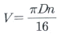
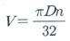
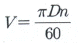
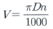
(정답률: 68%)
50. 산업안전보건법령에 따라 다음 중 덮개 혹은 울을 설치하여야 하는 경우나 부위에 속하지 않는 것은?
- 목재가공용 띠톱기계를 제외한 띠톱기계에서 절단에 필요한 톱날 부위 외의 위험한 톱날부위
- 선반으로부터 돌출하여 회전하고 있는 가공물이 근로자에게 위험을 미칠 우려가 있는 경우
- 보일러에서 과열에 의한 압력상승으로 인해 사용자에게 위험을 미칠 우려가 있는 경우
- 연삭기 또는 평삭기의 테이블, 형삭기 램 등의 행정 끝이 근로자에게 위험을 미칠 우려가 있는 경우
(정답률: 80%)
51. 다음 중 컨베이어(conveyor)의 방호장치로 볼 수 없는 것은?
- 반발예방장치
- 이탈방지장치
- 비상정지장치
- 덮개 또는 울
(정답률: 64%)
52. 클러치 프레스에 부착된 양수기동식 방호장치에 있어서 확동 클러치의 봉합개소의 수가 4, 분당 행정수가 300spm 일 때 양수기동식 조작부의 최소 안전거리는? (단, 인간의 손의 기준 속도는 1.6m/s로 한다.)
- 240mm
- 260mm
- 340mm
- 360mm
(정답률: 40%)
53. 프레스의 본질적 안전화(no-hand in die 방식) 추진대책이 아닌 것은?
- 안전금형을 설치
- 전용프레스의 사용
- 방호울이 부착된 프레스 사용
- 감응식 방호장치 설치
(정답률: 66%)
54. 산업안전보건법령상 크레인의 방호장치에 해당하지 않는 것은?
- 권과방지장치
- 낙하방지장치
- 비상정지장치
- 과부하방지장치
(정답률: 49%)
55. 양수조작식 방호장치에서 누름버튼 상호간의 내측 거리는 얼마 이상이어야 하는가?
- 250mm 이상
- 300mm 이상
- 350mm 이상
- 400mm 이상
(정답률: 83%)
56. 작업장 내 운반을 주목적으로 하는 구내운반차가 준수해야 할 사항으로 옳지 않은 것은?
- 주행을 제동하거나 정지상태를 유지하기 위하여 유효한 제동장치를 갖출 것
- 경음기를 갖출 것
- 핸들의 중심에서 차체 바깥 측까지의 거리가 65cm 이내일 것
- 운전자석이 차 실내에 있는 것은 좌우에 한 개씩 방향지시기를 갖출 것
(정답률: 80%)
57. 기계운동의 형태에 따른 위험점 분류에 해당되지 않는 것은?
- 끼임점
- 회전물림점
- 협착점
- 절단점
(정답률: 69%)
58. 연삭기에서 숫돌의 바깥지름이 180mm 라면, 평형 플랜지의 바깥지름은 몇 mm 이상이어야 하는가?
- 30
- 36
- 45
- 60
(정답률: 78%)
59. 롤러기에 사용되는 급정지장치의 종류가 아닌 것은?
- 손 조작식
- 발 조작식
- 무릎 조작식
- 복부 조작식
(정답률: 79%)
60. 드릴링 머신을 이용한 작업 시 안전 수칙에 관한 설명으로 옳지 않은 것은?
- 일감을 손으로 견고하게 쥐고 작업한다.
- 장갑을 끼고 작업을 하지 않는다.
- 칩은 기계를 정지시킨 다음에 와이어브러시로 제거한다.
- 드릴을 끼운 후에는 척 렌치를 반드시 탈거한다.
(정답률: 73%)
4과목: 전기 및 화학설비위험방지기술
61. 다음 중 접지공사의 종류에 해당되지 않는 것은?
- 특별 제1종 접지공사
- 특별 제3종 접지공사
- 제1종 접지공사
- 제2종 접지공사
(정답률: 49%)
62. 전기스파크의 최소발화에너지를 구하는 공식은?
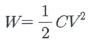
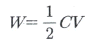
- W=2CV2
- W=2C2V
(정답률: 75%)
63. 허용접촉전압이 종별 기준과 서로 다른 것은?
- 제1종 – 2.5V 이하
- 제2종 – 25V 이하
- 제3종 – 75V 이하
- 제4종 - 제한없음
(정답률: 65%)
64. 감전을 방지하기 위하여 정전작업 요령을 관계근로자에 주지시킬 필요가 없는 것은?
- 전원설비 효율에 관한 사항
- 단락접지 실시에 관한 사항
- 전원 재투입 순서에 관한 사항
- 작업 책임자의 임명, 정전범위 및 절연용 보호구 작업 등 필요한 사항
(정답률: 72%)
65. 누전에 의한 감전위험을 방지하기 위하여 감전방지용 누전차단기의 접속에 관한 일반사항으로 틀린 것은?
- 분기회로마다 누전차단기를 설치한다.
- 동작시간은 0.03초 이내이어야 한다.
- 전기기계·기구에 설치되어 있는 누전차단기는 정격감도전류가 30mA 이하이어야 한다.
- 누전차단기는 배전반 또는 분전반 내에 접속하지 않고 별도로 설치한다.
(정답률: 69%)
66. 방폭전기설비의 설치시 고려하여야 할 환경조건으로 가장 거리가 먼 것은?
- 열
- 진동
- 산소량
- 수분 및 습기
(정답률: 62%)
67. 다음 중 방폭구조의 종류와 기호가 올바르게 연결된 것은?
- 압력방폭구조: q
- 유입방폭구조: m
- 비점화방폭구조: n
- 본질안전방폭구조: e
(정답률: 57%)
68. 페인트를 스프에이로 뿌려 도장작업을 하는 작업 중 발생할 수 있는 정전기 대전으로만 이루어진 것은?
- 분출대전, 충돌대전
- 충돌대전, 마찰대전
- 유동대전, 충돌대전
- 분출대전, 유동대전
(정답률: 71%)
69. 제3종 접지 공사시 접지선에 흐르는 전류가 0.1A 일 때 전압강하로 인한 대지 전압의 최대값은 몇 V 이하이어야 하는가?(관련 규정 개정전 문제로 여기서는 기존 정답인 1번을 누르면 정답 처리됩니다. 자세한 내용은 해설을 참고하세요.)
- 10 V
- 20 V
- 30 V
- 50 V
(정답률: 70%)
70. 다음 중 대전된 정전기의 제거방법으로 적당하지 않은 것은?
- 작업장 내에서의 습도를 가능한 낮춘다.
- 제전기를 이용해 물체에 대전된 정전기를 제거한다.
- 도전성을 부여하여 대전된 전하를 누설시킨다.
- 금속 도체와 대지 사이의 전위를 최소화하기 위하여 접지한다.
(정답률: 74%)
71. 휘발유를 저장하던 이동저장탱크에 등유나 경유를 이동저장탱크의 및 부분으로부터 주입할 때에 액표면의 높이가 주입관의 선단의 높이를 넘을 때까지 주입속도는 몇 m/s이하로 하여야 하는가?
- 0.5
- 1
- 1.5
- 2.0
(정답률: 69%)
72. 다음 중 증류탑의 원리로 거리가 먼 것은?
- 끓는점(휘발성) 차이를 이용하여 목적 성분을 분리한다.
- 열이동은 도모하지만 물질이동은 관계하지 않는다.
- 기-액 두 상의 접촉이 충분히 일어날 수 있는 접촉 면적이 필요하다.
- 여러 개의 단을 사용하는 다단탑이 사용될 수 있다.
(정답률: 75%)
73. 화염의 전파속도가 음속보다 빨라 파면 선단에 충격파가 형성되며 보통 그 속도가1000 ~ 3500m/s에 이르는 현상을 무엇이라 하는가?
- 폭발현상
- 폭굉현상
- 파괴현상
- 발화현상
(정답률: 81%)
74. SO2, 20ppm 은 약 몇 g/m3 인가? (단, SO2의 분자량은 64이고, 온도는 21℃, 압력은 1기압으로 한다.)
- 0.571
- 0.531
- 0.⑤71
- 0.⑤31
(정답률: 29%)
75. 다음 중 유해 · 위험물질이 유출되는 사고가 발생했을 때의 대처요령으로 가장 적절하지 않은 것은?
- 중화 또는 희석을 시킨다.
- 유해 · 위험물질을 즉시 모두 소각시킨다.
- 유출부분을 억제 또는 폐쇄시킨다.
- 유출된 지역의 인원을 대피시킨다.
(정답률: 75%)
76. 다음 중 가연성 분진의 폭발 메커니즘으로 옳은 것은?
- 퇴적분진 → 비산 → 분산 → 발화원 발생 → 폭발
- 발화원 발생 → 퇴적분진 → 비산 → 분산 → 폭발
- 퇴적분진 → 발화원 발생 → 분산 → 비산 → 폭발
- 발화원 발생 → 비산 → 분산 → 퇴적분진 → 폭발
(정답률: 63%)
77. 다음 중 물질의 위험성과 그 시험방법이 올바르게 연결된 것은?
- 인화점 - 태그 밀폐식
- 발화온도 - 산소지수법
- 연소시험 - 가스크로마토그래피법
- 최소발화에너지 – 클리브랜드 개방식
(정답률: 52%)
78. 메탄(CH4) 100mol이 산소 중에서 완전 연소하였다면 이 때 소비된 산소량 몇 mol인가?
- 50
- 100
- 150
- 200
(정답률: 49%)
79. 물반응성 물질에 해당하는 것은?
- 니트로화합물
- 칼륨
- 염소산나트륨
- 부탄
(정답률: 78%)
80. 가정에서 요리를 할 때 사용하는 가스렌지에서 일어나는 가스의 연소형태에 해당되는 것은?
- 자기연소
- 분해연소
- 표면연소
- 확산연소
(정답률: 63%)
5과목: 건설안전기술
81. 산업안전보건 중 안전시설비의 항목에서 사용할 수 있는 항목에 해당하는 것은?
- 외부인 출입금지, 공사자 경계표시를 위한 가설울타리
- 작업발판
- 절토부 및 성토부 등의 토사유실 방지를 위한 설비
- 사다리 전도방지장치
(정답률: 61%)
82. 달비계에 사용하는 와이어로프는 지름의 감소가 공칭지름의 몇 %를 초과하는 경우에사용할 수 없도록 규정되어 있는가?
- 5%
- 7%
- 9%
- 10%
(정답률: 58%)
83. 건설작업용 리프트에 대하여 바람에 의한 붕괴를 방지하는 조치를 한다고 할 때 그 기준이 되는 풍속은?
- 순간풍속 30m/sec 초과
- 순간풍속 35m/sec 초과
- 순간풍속 40m/sec 초과
- 순간풍속 45m/sec 초과
(정답률: 55%)
84. 추락에 의한 위험방지와 관련된 승강설비의 성치에 관한 사항이다. ( )에 들어갈 내용으로 옳은 것은?
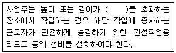
- 1.0m
- 1.5m
- 2.0m
- 2.5m
(정답률: 77%)
85. 지반의 조사방법 중 지질의 상태를 가장 정확히 파악할 수 있는 보링방법은?
- 충격식 보링(percussion boring)
- 수세식 보링(wash boring)
- 회전식 보링(rotary boring)
- 오거 보링(auger boring)
(정답률: 56%)
86. 철근의 인력 운반 방법에 관한 설명으로 옳지 않는 것은?
- 긴 철근은 두 사람이 1조가 되어 같은 쪽의 어깨에 메고 운반한다.
- 양끝은 묶어서 운반한다.
- 1회 운반 시 1인당 무게는 50kg 정도로 한다.
- 공동작업 시 신호에 따라 작업한다.
(정답률: 74%)
87. 사다리식 통로를 설치할 때 사다리의 상단은 걸쳐 놓은 지점으로부터 최소 얼마 이상 올라가도록 하여야 하는가?
- 45cm 이상
- 60cm 이상
- 75cm 이상
- 90cm 이상
(정답률: 60%)
88. 차량계 건설기계의 작업계획서 작성 시 그 내용에 포함되어야 할 사항이 아닌 것은?
- 사용하는 차량계 건설기계의 종류 및 성능
- 차량계 건설기계의 운행 경로
- 차량계 건설기계에 의한 작업방법
- 브레이크 및 클러치 등의 기능 점검
(정답률: 65%)
89. 개착식 굴착공사(Open cut)에서 설치하는 계측기기와 거리가 먼 것은?
- 수위계
- 경사계
- 응력계
- 내공변위계
(정답률: 58%)
90. 콘크리트 측압에 관한 설명으로 옳지 않은 것은?
- 대기의 온도가 높을수록 크다.
- 콘크리트의 타설속도가 빠를수록 크다.
- 콘크리트의 타설높이가 높을수록 크다.
- 콘크리트 비중이 클수록 크다
(정답률: 61%)
91. 차량계 하역운반기계 등을 이송하기 위하여 자주(自走) 또는 견인에 의하여 화물자동차에 싣거나 내리는 작업을 할 때 발판·성토 등을 사용하는 경우 기계의 전도 또는 전락에 의한 위험을 방지하기 위하여 준수하여야 할 사항으로 옳지 않은 것은?
- 싣거나 내리는 작업은 견고한 경사지에서 실시할 것
- 가설대 등을 사용하는 경우에는 충분한 폭 및 강도와 적당한 경사를 확보할 것
- 발판을 사용하는 경우에는 충분한 길이·폭 및 강도를 가진 것을 사용할 것
- 지정운전자의 성명·연락처 등을 보기 쉬운 곳에 표시하고 지정운전자 외에는 운전하지 않도록 할 것
(정답률: 74%)
92. 다음 중 차량계 건설기계에 속하지 않는 것은?
- 배쳐플랜트
- 모터그레이더
- 크롤러드릴
- 탠덤롤러
(정답률: 48%)
93. 거푸집 해체 시 작업자가 이행해야 할 안전수칙으로 옳지 않은 것은?
- 거푸집 해체는 순서에 입각하여 실시한다.
- 상하에서 동시작업을 할 때는 상하의 작업자가 긴밀하게 연락을 취해야 한다.
- 거푸집 해체가 용이하지 않을 때에는 큰 힘을 줄 수 있는 지렛대를 사용해야 한다.
- 해체된 거푸집, 각목 등을 올리거나 내릴 때는 달줄, 달포대 등을 사용한다.
(정답률: 68%)
94. 강관비계의 구조에서 비계기둥 간의 최대 허용 적재 하중으로 옳은 것은?
- 500 kg
- 400 kg
- 300 kg
- 200 kg
(정답률: 61%)
95. 다음 셔블계 굴착장비 중 좁고 깊은 굴착에 가장 적합한 장비는?
- 드래그라인(dragline)
- 파워셔블(power shovel)
- 백호(back hoe)
- 클램쉘(clam shell)
(정답률: 64%)
96. 추락방지망의 달기로프를 지지점에 부착할 때 지지점의 간격이 1.5m 인 경우 지지점의 강도는 최소 얼마 이상이어야 하는가?(단, 연속적인 구조물이 방망 지지점인 경우)
- 200 kg
- 300 kg
- 400 kg
- 500 kg
(정답률: 64%)
97. 토류벽에 거치된 어스 앵커의 인장력을 측정하기 위한 계측기는?
- 하중계(Load cell)
- 변형계(Strain gauge)
- 지하수위계(Piezometer)
- 지중경사계(Inclinometer)
(정답률: 53%)
98. 작업에서의 위험요인과 재해형태가 가장 관련이 적은 것은?
- 무리한 자재적재 및 통로 미확보 → 전도
- 개구부 안전난간 미설치 → 추락
- 벽돌 등 중량물 취급 작업 → 협착
- 항만 하역 작업 → 질식
(정답률: 71%)
99. 건설공사현장에 가설통로를 설치하는 경우 경사는 몇 도 이내를 원칙으로 하는가?
- 15°
- 20°
- 25°
- 30°
(정답률: 56%)
100. 건설업 산업안전보건관리비 계상 및 사용기준을 적용하는 공사금액 기준을 적용하는 공사금액 기준으로 옳은 것은?(단, 「산업재해보상보험법」제6조에 따라「산업재해보상보험법」의 적용을 받는 공사 )(2020년 01월 23일 개정된 규정 적용됨)
- 총공사금액 1천만원 이상인 공사
- 총공사금액 2천만원 이상인 공사
- 총공사금액 4천만원 이상인 공사
- 총공사금액 1억원 이상인 공사
(정답률: 61%)